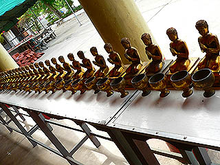
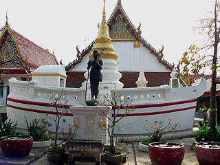

ワット
パモック/アントン県
WatPaMok/AngThong
元旦の大仏巡り、最後はワット パモックである。
アントン県の南部、チャオプラヤ−川のほとりにある名刹だ。
もう陽も傾いて来て境内には地元の人達が立ち話をしている程度。
午前中のホットな参拝風景もいいが、夕方の、いかにも一日の終わり、といったのんびりとした雰囲気もまた良いものだ。
木彫りの人形がズラッと並んだ人気のない回廊を歩いていく。

本堂には22.6メートルという寝釈迦さんがいた。
寝釈迦さんも今日のお仕事が終わってホッと一息ついている風に見える。
ほとんど人もおらずガラーンとした堂内だが、それはそれで味わい深い。
ここの寝釈迦さんは煉瓦積みで出来ているという。ということはかなり古い寝釈迦さんなのだろう。
今日巡った他の寝釈迦さんに大きさこそかなわないが、枕や天井の装飾の細かさを見てもその信仰具合が見て取れる。
でも足の裏はまっ平ら。
入口近くにあった船のカタチのお堂。

扉が閉まっていたが中に入れそうなつくりではあった。
同じような建物がバンコクにもあった。そこのレプリカなのだろうか。
川辺に出ると日中は暑かったのに川風が吹いて気持ち良い。
アントンには他にも行きたい寺があったが、そろそろタイムアップである。
そろそろバンコクに戻るとしますか。
次の修行場へ
泰国珍寺武者修行
珍寺大道場 HOME